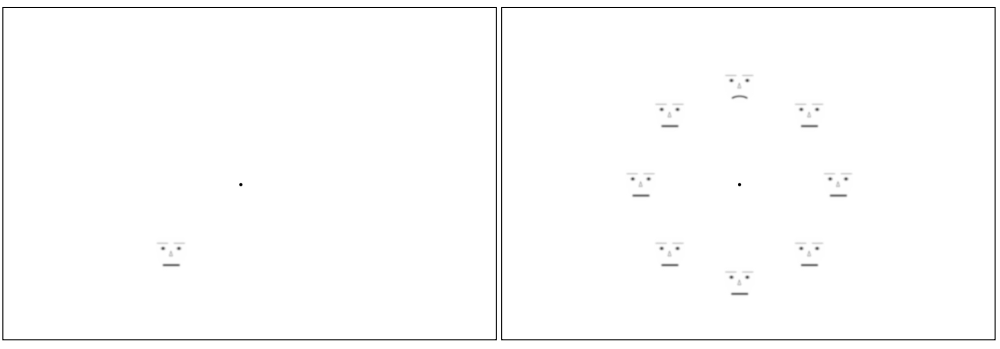

<!DOCTYPE html>
<html>
    <head>
      <title>CIG</title>
      <script src="../jspsych-6.3.1/jspsych.js"></script>
      <script src="../jspsych-6.3.1/plugins/jspsych-html-keyboard-response.js"></script>
      <script src="../jspsych-6.3.1/plugins/jspsych-categorize-image.js"></script>
      <script src="../jspsych-6.3.1/plugins/jspsych-image-keyboard-response.js"></script>
      <script src="../jspsych-6.3.1/plugins/jspsych-same-different-image.js"></script>
      <script src="../jspsych-6.3.1/plugins/jspsych-fullscreen.js"></script>
      <script src="../jspsych-6.3.1/plugins/jspsych-preload.js"></script>
      <script src="jspsych-html-slider-response.js"></script>
      <script src="jspsych-survey-text.js"></script>
      <script src="jspsych-html-slider-response_original.js"></script>
      <script src="jspsych-html-slider-response_8sliders.js"></script>
      <script src="../jspsych-6.3.1/plugins/jspsych-image-button-response.js"></script>
      <script src="../jspsych-6.3.1/plugins/jspsych-instructions.js"></script>
      <script src="../jspsych-6.3.1/plugins/jspsych-audio-keyboard-response.js"></script>
      <script src="../jspsych-6.0.5/plugins/jspsych-fullscreen.js"></script>
      <script src="../jspsych-6.3.1/plugins/jspsych-call-function.js"></script>
      <script src="jspsych-ydk.js"></script>

      <script src="jspsych-rdk_2.js"></script>

      <script src="jspsych-survey-likert.js"></script>
      <script src="demoQ.js"></script>
      
      <script src="../jspsych-6.3.1/plugins/jspsych-survey-multi-choice.js"></script>
      
      <script src="faceTrials.js"></script>
      <script src="demoQ.js"></script>
      <script src="../jspsych-6.0.5/plugins/jspsych-survey-multi-choice.js"></script>
      <script src="../jspsych-6.0.5/plugins/jspsych-survey-multi-select.js"></script>
      <script src="vignettes_8sliders.js"></script>

      <script src="../jspsych-6.0.5/plugins/jspsych-rdk.js"></script>
      <script src="jspsych-rdkRedDot.js"></script>
      <script src="../jspsych-6.0.5/plugins/jspsych-html-button-response.js"></script>
      
        <script src="../jspsych-6.0.5/plugins/jspsych-fullscreen.js"></script>
        
        <link href="../jspsych-6.0.5/css/jspsych.css" rel="stylesheet" type="text/css">
    </head>
    <style>
    .circle-container {
            position: relative;
            width: 24em;
            height: 24em;
            padding: 2.8em;
            /*2.8em = 2em*1.4 (2em = half the width of a link with img, 1.4 = sqrt(2))*/
            /*border: dashed 1px;*/
            border-radius: 50%;
            margin: 1.75em auto 0;
        }
        .circle-container a {
            display: block;
            position: absolute;
            top: 50%; left: 50%;
            width: 4em; height: 4em;
            margin: -2em;
        }
        .circle-container img { display: block; width: 100%; }
        .deg0 { transform: translate(12em); } /* 12em = half the width of the wrapper */
        .deg45 { transform: rotate(45deg) translate(12em) rotate(-45deg); }
        .deg90 { transform: rotate(90deg) translate(12em) rotate(-90deg); }
        .deg135 { transform: rotate(135deg) translate(12em) rotate(-135deg); }
        .deg180 { transform: translate(-12em); }
        .deg225 { transform: rotate(225deg) translate(12em) rotate(-225deg); }
        .deg270 { transform: rotate(270deg) translate(12em) rotate(-270deg); }
        .deg315 { transform: rotate(315deg) translate(12em) rotate(-315deg); }

    
    .fixation {font-size: 45px; font-weight: bold; color: rgb(0, 0, 0);}

    </style>
    <body></body>
    <script>

var timeline = []
var questionOrder = 0 
var sliderQuestions = 0
var count = 0;
var count_magEst = 0;
var nTrials = faceTrials.length // 100 is for 100 images, 5 for 5 slider questions per an image.
var faceTrials_magTask = jsPsych.randomization.repeat(faceTrials, 1)
// keeping the original n the same with the other study
n = 60
faceTrials_magTask.splice(-1*n)
var nTrials_magEst = faceTrials_magTask.length

function getRandomInt(min, max) {
    min = Math.ceil(min);
    max = Math.floor(max);
    return Math.floor(Math.random() * (max - min + 1)) + min;
}

var participantID = getRandomInt(1,100000)//jsPsych.data.getURLVariable('ParticipantID');
console.log('Participant ID is:', participantID);
if (typeof participantID === "undefined") {
alert("participant ID is undefined, assigning arbitrarily. ");
var participantID = 1;
}
jsPsych.data.addProperties({participant_ID: participantID});


function saveData() {
  var xhr = new XMLHttpRequest();
  xhr.open('POST', 'write_data.php'); // change 'write_data.php' to point to php script.
  xhr.setRequestHeader('Content-Type', 'application/json');
  xhr.onload = function() {
    if(xhr.status == 200){
      var response = JSON.parse(xhr.responseText);
      console.log(response.success);
    }
  };
  //xhr.send(jsPsych.data.get().json());
  //xhr.send(jsPsych.data.get().json());
  xhr.send(jsPsych.data.get().last(1).json());
}

// change the color of the background and the text
document.body.style.backgroundColor = 'white'//"#808080"
document.body.style.color = 'black'

// START OF THE FACE SET // 
curvatureResponseTrial_2 = {
    type: 'html-slider-response_original',
    stimulus: function(){
      return `
    <div style = "width:540px;">
      <p>  Every display contained either a happy or sad face please report the perceived intensity of the happy or sad expression.</p>
      <br>
      
    </div>`},
    labels: ['', '', ''], //['downward curve / sad', 'middle', 'upward curve / happy']
    step: 0.5,
    min: 1,
    max: 10,
    on_finish: function(data){
      data.faceTrialID = jsPsych.timelineVariable('id')
      var timestamp = (new Date).toISOString().replace(/z|t/gi,' ').trim();
      jsPsych.data.addDataToLastTrial({timestamp});
      saveData()
    }
}

var curvatureResponseTrial = {
    type: 'image-keyboard-response',
    stimulus: 'magnitude_choice_original.jpg',
    choices: ['0', '1', '2', '3', '4', '5', '6', '7', '8', '9'],
    prompt: "<p>Please use numbers on the keyboard to select to report the perceived intensity of the happy or sad expression.</p>",
    on_finish: function(data){
      data.faceTrialID = jsPsych.timelineVariable('id')
      var timestamp = (new Date).toISOString().replace(/z|t/gi,' ').trim();
      jsPsych.data.addDataToLastTrial({timestamp});
      data.task_ID = 2;
      saveData()
    }
};

var preloadedImages = ["singleFace_empty.jpg", "singleFace_neutral.jpg", "singleFace_sad.jpg", "singleFace_happy.jpg", "fixation.jpg", "magnitude_choice.jpg"]

var preload = {
    type: 'preload',
    auto_preload: true, // automatically load all files based on the main timeline
    images: preloadedImages // to preload manually
};

var test_trial_magEst = {
  type: 'html-keyboard-response',
    stimulus: function() {
    return `
    <div class='circle-container'>
        <a href='#' class='center'></a>
        <a href='#' class='deg0'></a>
        <a href='#' class='deg45'></a>
        <a href='#' class='deg90'></a>
        <a href='#' class='deg135'></a>
        <a href='#' class='deg180'></a>
        <a href='#' class='deg225'></a>
        <a href='#' class='deg270'></a>
        <a href='#' class='deg315'></a>
    </div>`},
    choices: ['Space', 'f', 'j'],
    response_ends_trial: true,
    trial_duration: 100,
    on_finish: function(data){
      data.faceTrialID = jsPsych.timelineVariable('id')
      var timestamp = (new Date).toISOString().replace(/z|t/gi,' ').trim();
      jsPsych.data.addDataToLastTrial({timestamp});
      if (data.faceTrialID == "sad_7N" | data.faceTrialID == "sad_7N" ) {
        data.targetLoc = jsPsych.timelineVariable('faceList').indexOf('sad')
      }
      else if (data.faceTrialID == "happy_7N" | data.faceTrialID == "happy_single") {
        data.targetLoc = jsPsych.timelineVariable('faceList').indexOf('happy')
      }
      else {
        data.targetLoc = jsPsych.timelineVariable('faceList').indexOf('neutral')
      }
      data.stimArray = jsPsych.timelineVariable('faceList').toString();
      count_magEst++;
      var progress = count_magEst/nTrials_magEst;
      jsPsych.setProgressBar(progress);
      saveData()
    }
};


var test_trial = {
  type: 'html-keyboard-response',
    stimulus: function() {
    return `
    <div class='circle-container'>
        <a href='#' class='center'></a>
        <a href='#' class='deg0'></a>
        <a href='#' class='deg45'></a>
        <a href='#' class='deg90'></a>
        <a href='#' class='deg135'></a>
        <a href='#' class='deg180'></a>
        <a href='#' class='deg225'></a>
        <a href='#' class='deg270'></a>
        <a href='#' class='deg315'></a>
    </div>`},
    choices: ['Space', 'f', 'j', '3', '4'],
    response_ends_trial: true,
    trial_duration: null,
    on_finish: function(data){
      data.faceTrialID = jsPsych.timelineVariable('id')
      var timestamp = (new Date).toISOString().replace(/z|t/gi,' ').trim();
      jsPsych.data.addDataToLastTrial({timestamp});
      if (data.faceTrialID == "sad_7N" | data.faceTrialID == "sad_7N" ) {
        data.targetLoc = jsPsych.timelineVariable('faceList').indexOf('sad')
      }
      else if (data.faceTrialID == "happy_7N" | data.faceTrialID == "happy_single") {
        data.targetLoc = jsPsych.timelineVariable('faceList').indexOf('happy')
      }
      else {
        data.targetLoc = jsPsych.timelineVariable('faceList').indexOf('neutral')
      }
      data.stimArray = jsPsych.timelineVariable('faceList').toString();
      count++;
      var progress = count/nTrials;
      jsPsych.setProgressBar(progress);
      data.task_ID = 1
      saveData()
    }
};

var blank_trial = {
  type: 'html-keyboard-response',
    stimulus: function() {
    return `
    <div class='circle-container'>
        <a href='#' class='center'></a>
    </div>`},
    choices: ['g'],
    response_ends_trial: false,
    trial_duration: 500
};


var fixation = {
    type: 'html-keyboard-response',
    stimulus: '+',
    choices: "NO_KEYS",
    trial_duration: 500,
    css_classes: ['fixation']
}


// MAG EST PRACTICE AND INSTRUCTIONS //
// &#39;


var faceInstructions_1 = {
    type: 'instructions',
    pages: [
        '<p>Welcome to the second and final task. During this task, you will be asked to complete a series of trials, each of which will last just a few minutes.</p>'+
        '<p>To start, you will see a fixation point for one second, and it&#39;s important that you keep your focus on it. Take a look at the example below - this is what you should be looking for:<p>'+
        '<br> (note that these instructions might be redundant if you are coming from a detection (button press) task)'+
        '</img>' +
        '<p> Next, a single face or a group of faces will appear on the screen, but only for a fraction of a second. Can you quickly identify the emotion on each face? Take a look at these examples of happy, sad, and neutral faces to give you an idea of what to expect:  </p> <br>' + 
          '<p> For example, this is a <b>happy</b> face (mouth has a <b>upward</b> curvature): </p> <br>' + '</img> <br>' +
            '<p> <b>Sad</b> face (mouth has a <b>downward</b> curvature): </p> <br>'  + '</img> <br>' +
          '<p> <b>Neutral</b> face: </p> <br>' + '</img>' + '<br><br><br>',
          '<br><br><p> As seen above, you will always see <b>8 faces</b> in total and <b>7 of them</b> will always be a <b>neutral face</b>. And the 8th one will be your target face (emotional face). <br><br>Your task is to identify the curvature of the target face&#39;s mouth - will it be happy or sad? You will know which one will it be. </p>',
        '<p> Using your keyboard, you&#39;ll need to respond with the corresponding number that matches your perception of the curvature. Please refer to the response scale below to see the values assigned to each number. Remember, if you want to respond with 10, use the &#39;0&#39; key on your keyboard. </p> <br>' + 
          '</img> <br>' +
          '<br><br>Ready to get started? Good luck!'
    ],
    show_clickable_nav: true
}


var faceTrials_practice = [
  {
    "id": "7_neutral_1_sad",
    "faceList": ["neutral", "neutral", "neutral", "neutral", "sad", "neutral", "neutral", "neutral"],
  },
  {
    "id": "single_happy",
    "faceList": ["empty", "empty", "empty", "empty", "happy", "empty", "empty", "empty"],
  }
]
faceTrials_practice = jsPsych.randomization.repeat(faceTrials_practice, 1)

var test_trial_practice = {
  type: 'html-keyboard-response',
    stimulus: function() {

    return `
    <div class='circle-container'>
        <a href='#' class='center'></a>
        <a href='#' class='deg0'></a>
        <a href='#' class='deg45'></a>
        <a href='#' class='deg90'></a>
        <a href='#' class='deg135'></a>
        <a href='#' class='deg180'></a>
        <a href='#' class='deg225'></a>
        <a href='#' class='deg270'></a>
        <a href='#' class='deg315'></a>
    </div>`},
    choices: ['g'],
    response_ends_trial: false,
    trial_duration: 500,
};

var test_trial_practice_fast = {
  type: 'html-keyboard-response',
    stimulus: function() {
    return `
    <div class='circle-container'>
        <a href='#' class='center'></a>
        <a href='#' class='deg0'></a>
        <a href='#' class='deg45'></a>
        <a href='#' class='deg90'></a>
        <a href='#' class='deg135'></a>
        <a href='#' class='deg180'></a>
        <a href='#' class='deg225'></a>
        <a href='#' class='deg270'></a>
        <a href='#' class='deg315'></a>
    </div>`},
    choices: ['g'],
    response_ends_trial: false,
    trial_duration: 100,
};

var curvatureResponseTrial_practice = {
    type: 'image-keyboard-response',
    stimulus: 'magnitude_choice_original.jpg',
    choices: ['0', '1', '2', '3', '4', '5', '6', '7', '8', '9'],
    prompt: "<p>Please use numbers on the keyboard to report the perceived intensity of the happy or sad expression.</p>"
};


const face_practice = {
    timeline:[blank_trial, test_trial_practice, blank_trial, curvatureResponseTrial_practice], //target_trial
    timeline_variables: faceTrials_practice
}

var faceInstructions_2 = {
    type: 'instructions',
    pages: [
        '<p> <i>Recap:</i>you are asked to report the perceived intensity/curvature of the emotional expression. </p>',
        '<p>Now you understand the basics of it. <br> Now it&rsquo;s time for you to do some practice trials.</p>'
    ],
    show_clickable_nav: true
}

var faceInstructions_3 = {
    type: 'instructions',
    pages: [
        '<p>Now you understand the basics of it. I&rsquo;m going to show you what the real trial looks like. </p>'
    ],
    show_clickable_nav: true
}

var faceTrials_practice = [
  {
  "id": "7_neutral_1_happy",
  "faceList": ["happy", "neutral", "neutral", "neutral", "neutral", "neutral", "neutral", "neutral"],
  },
  {
    "id": "7_neutral_1_sad",
    "faceList": ["sad", "neutral", "neutral", "neutral", "neutral", "neutral", "neutral", "neutral"],
  }
]

faceTrials_practice = jsPsych.randomization.repeat(faceTrials_practice, 1)
const face_practice_fast = {
    timeline:[blank_trial, test_trial_practice_fast, blank_trial, curvatureResponseTrial_practice], //target_trial
    timeline_variables: faceTrials_practice
}

var faceInstructions_4 = {
    type: 'instructions',
    pages: [
        '<p>Please don&rsquo;t think about whether you&rsquo;re correct or incorrect. All we care about is that you tell us what you see. That&rsquo;s all that matters. So, as long as you tell us what you see, or as long as you give us your best guess, then you&rsquo;ll have done a good job.</p>' +
        '<p> '
    ],
    show_clickable_nav: true
}
var practiceEndText = {
    type: 'instructions',
    pages: [
        '<p>Alright, you&rsquo;re definitely ready to move on to the game.</p>'+
      '<p>You&rsquo;re going to run in the real game now. It should take about a few minutes. There will be many more trials than the practice session you just did, so please do your best to pay attention the whole time. </p>'+ 
    '<p>When you&rsquo;re ready, go ahead and get started.</p>'],
    show_clickable_nav: true
}
const practiceProc = {
    timeline:[faceInstructions_1, faceInstructions_2, face_practice, faceInstructions_3, face_practice_fast, faceInstructions_4, practiceEndText], //target_trial
}

// END OF MagEstTask Instructions and practice // 

/* Welcome....
In this task, you will be viewing cartoon faces.
Sometimes you'll see one face on the screen. Sometimes you'll see eight faces on the screen.
Your task will be to indicate, on each trial, whether an emotional face is present on the screen.
If a single face is on the screen, it might be sad, happy, or neutral. [add the image]
If eight faces are on the screen, at least seven of them will have neutral expressions.
The eight face may have a happy expression, a sad expression, or a neutral expression.
On each trial, your task is simply to indicate whether an emotional face is present.
If an emotional face is present anywhere on the screen, press the 'f' button.
If an emotional face is NOT present, press the 'j' button. 
Please respond as quickly as possible. 
However, keep in mind that accuracy is important, too. 
Thanks bozo!
 */

 /*
 <div class='circle-container'>
      <a href='#' class='center'></a>
      <a href='#' class='deg0'></a>
      <a href='#' class='deg45'></a>
      <a href='#' class='deg90'></a>
      <a href='#' class='deg135'></a>
      <a href='#' class='deg180'></a>
      <a href='#' class='deg225'></a>
      <a href='#' class='deg270'></a>
      <a href='#' class='deg315'></a>
    </div>
    */


// END  OF THE FACE SET // 
var introText = {
type: "instructions",
on_start: function(){
  jsPsych.setProgressBar(0);
},
  pages: function(){
    return [
  `<p>Welcome to our visual search task! <br><br> You will be doing 2 tasks each should last around 7-8 minutes. Let us orient you to the first task.
   <br> We will provide the instructions for the second task after the first. <br><br></p>`,
  `<p> Are you ready to take part in a visual experiment that will put your observation skills to the test? Great! In this first task, you will be viewing cartoon faces. Like these: <br> <br></img></img>
    <br><br> Sometimes you'll see <i>one</i> face on the screen. <br>Sometimes you'll see <i>eight</i> faces on the screen. 
    <br><br><figcaption>Fig.1 Left: Single Trial | Right: 8 Faces (Crowd) Trial </figcaption>
    <br>Your task will be to indicate, on each trial, whether an emotional face is present on the screen.
    <br><br>If a <i>single</i> face is on the screen, it might be sad, happy, or neutral. 
    <br><br>If <i>eight faces</i> are on the screen, at least seven of them will have neutral expressions. 
    <br>The eight face may have a happy expression, a sad expression, or a neutral expression.
    <br><br>On each trial, your task is simply to indicate whether an emotional face (meaning happy or sad expression) is present.
    <br><br>If an emotional face is present anywhere on the screen, press the ':O' button on the response box.
    <br><br>If an emotional face is NOT present, press the ':|' button.
    <br><br>For example, in figure 1, on the left, we see a single neutral face. In that trial we expect you to press ':|' because it is NOT anemotional face. For the crowd of faces to the right, we expect you to press ':O' because there is a sad face in that crowd (top) which is an emotional face. 
    <br><br>Please respond as quickly as possible. 
    <br>However, keep in mind that accuracy is important, too. 
    `,
    `<br><br>Recap: Please keep your fixation at the black dot at the center. Actually looking at the black dot will help you find the emotional face (if there is) faster also! <br><br>Please press ':O' when you detect an emotional face (e.g. happy or sad expression) in a crowd of faces or single.<br><br> If an emotional face is NOT present, please press the ':|' button.
    <br><br> Finally, we want to emphasize that your participation in this study was entirely voluntary, and you were free to withdraw at any time without penalty. We also want to assure you that all data collected during the study will be kept confidential and anonymous.`
  ]}, 
    show_clickable_nav:true
}; 
//            

var endText_scale = {
type: "html-slider-response_original",
      stimulus: function(){
            return `
          <div style = "width:540px;">
            <p> Before you go, we have one final question for you. During the experiment, did you notice any difference in your ability to detect happy faces versus sad faces? If you think you were able to detect happy faces faster than sad faces, please press 'y'. Otherwise, please press 'o'." </p>
            <br>
          </div>`}, 
  show_clickable_nav:false,
  response_ends_trial: true,
  trial_duration: null,
  on_finish: function(data){
      var timestamp = (new Date).toISOString().replace(/z|t/gi,' ').trim();
      jsPsych.data.addDataToLastTrial({timestamp});
    }
}; 


var endText = {
  type: 'html-keyboard-response',
    stimulus: function() {
    return `
          <div style = "width:540px;">
            <p> The experiment is over. Thank you for your time! One last question: Do you think you detected the happy face faster than a sad face? Press y for yes and o for no.</p>
            <br>
          </div>`},
    choices: ['y', 'o'],
    response_ends_trial: true,
    trial_duration: null,
    on_finish: function(data){
      var timestamp = (new Date).toISOString().replace(/z|t/gi,' ').trim();
      jsPsych.data.addDataToLastTrial({timestamp});
      saveData()
    }
};

var endText_confidence = {
type: "html-slider-response_original",
      stimulus: function(){
            return `
          <div style = "width:540px;">
            <p> And how confident you are with your answer?</p>
            <br>
          </div>`}, 
  show_clickable_nav:false,
  response_ends_trial: true,
  trial_duration: null,
  labels: ['I have no idea', 'Very Confident'],
  on_finish: function(data){
      var timestamp = (new Date).toISOString().replace(/z|t/gi,' ').trim();
      jsPsych.data.addDataToLastTrial({timestamp});
      saveData()
    }
}; 

var searchInstructions = {
    type: 'instructions',
    pages: [
        '<p></p>'+
        '<p> You will see either a <b>single face</b> or <b>group of faces</b> for a very long duration. Like the below: </p> <br>' + 
          '<p> For example, this is a <b>happy</b> face (mouth has a <b>upward</b> curvature): </p> <br>' + '</img> <br>' +
            '<p> <b>Sad</b> face (mouth has a <b>downward</b> curvature): </p> <br>'  + '</img> <br>' +
          '<p> <b>Neutral</b> face: </p> <br>' + '</img>' + '<br><br><br>',
        '<p> And, here is how a trial with a group of faces look like:'+ 
          `
          <div class='circle-container'>
              <a href='#' class='center'></a>
              <a href='#' class='deg0'></a>
              <a href='#' class='deg45'></a>
              <a href='#' class='deg90'></a>
              <a href='#' class='deg135'></a>
              <a href='#' class='deg180'></a>
              <a href='#' class='deg225'></a>
              <a href='#' class='deg270'></a>
              <a href='#' class='deg315'></a>
          </div>`
    ],
    show_clickable_nav: true
}

var debrief = {
    type: "instructions",
      pages: function(){
        return [`<div style="width:700px;"><p style='font-size: 25px'>
        <br><br> <p style="color:blue;">The experiment has ended. Thank you so much for your time! </p>
        This study is concerned with the detection ability in which people think about others. In this study, you were asked to listen to a sound clip (e.g., white noise, a few people talking, or crowd of people) and mentally visualize what it might be like in that type of an environment. Next, you were asked to evaluate multiple individuals (e.g., a librarian, computer programmer) while listening to these sound clips in the background. We were primarily interested in the extent to which cues of crowding impact judgments about novel individuals. We expect this study to have important implications for how scientists understand the impact of crowds in social perception and how people respond to others in crowded contexts. For this reason, we highly value your participation today and we expect it to have an important impact.\
        <br><br>IMPORTANT: We would like to ask to not to talk with anyone who might be a participant in this study. The main reason for this is that it is important that people respond naturally to this study, and it can be hard to do that when you know the details. Thank you for your consideration. \
        <br><br>If you have additional questions, comments, or otherwise concerns regarding this experiment or the SPA Lab, feel free to email Spencer dobbs at Spencer.dobbs@du.edu, Gorkem Er at Gorkem.Er@du.edu, or Professor Max Weisbuch at max.weisbuch@du.edu or the SPA Lab email at dupsychstudy@gmail.com \
        <br> You can close the window after pressing "next" button. Please note that the experiment has ended and your data is saved. You will not be redirected to SONA. Your grants will be awarded manually within 48 hours.

    `]},
        show_clickable_nav:true
    };  

const searchTask = {
    timeline:[blank_trial, test_trial ], // curvatureResponseTrial  target_trial
    timeline_variables: faceTrials
}


const magnitudeEstTask = {
    timeline:[blank_trial, test_trial_magEst, curvatureResponseTrial ], // curvatureResponseTrial  target_trial
    timeline_variables: faceTrials_magTask
}

var fullscreen_trial = {
  type: 'fullscreen',
  fullscreen_mode: true
}

var infoSheet = {
  type: "instructions",
  pages: function(){
    return ['<p align="left"> <b>Exempt Research Information Sheet </b> <br> <br> <b>Title of Research Study</b>: The Angry Crowd Bias: Social, Cognitive, and Perceptual Mechanisms <br> <b>Principal Investigator</b>: Tim Sweeny, PhD, University of Denver, Department of Psychology <br> <b>IRBNet Protocol Number</b>: 1947145 <br> <b>Sponsor/Funding Source</b>:  National Science Foundation<br><br>You are being asked to participate in a research study. Your participation in this research study is voluntary and you do not have to participate. Even if you decide to participate now, you may change your mind and stop at any time without penalty. This document contains important information about this study and what to expect if you decide to participate. Please consider the information carefully. If an experimenter is present, feel free to ask questions before making your decision about whether or not to participate. <br> <br> <b>Study Purpose</b>: The purpose of this study is to gain a better understanding of how people make judgments of individuals and crowds of people. We are interested in how people perceive emotion, gender, age, race, and attractiveness of people when they are seen alone or in the contexts of crowds. We also hope to gain an understanding of how a person&#39s beliefs influence their perception, and how individuals differ in their perceptions of other people. Another aim of this study is to better understand how people pay attention to individuals and crowds of people by tracking their eye movements as they look at other people on a computer monitor. <br><br>The <i>requirements</i> for participation include (1) being 18 years-of-age or older, (2) having typical visual acuity (i.e., &#39;20/20&#39 vision, either naturally or through the use of corrective lenses), and (3) having no other medical conditions that impair vision or your ability to move your eyes (e.g., strabismus, also known as &#39lazy eye.&#39). Your participation in all aspects of this study is voluntary. You may choose not to answer any questions asked of you during the study, and you may leave the study at any point (including now) for any reason without penalty. <br><br> Potential risks and/or discomforts of participation may include fatigue or boredom. You may also find that some of the questions included in the questionnaires make you uncomfortable. Please remember that you may choose not to answer any (or all) of the questions in these questionnaires, and there will be no penalty for this. There is also a slight risk that you may experience negative feelings from viewing the emotional pictures. If you become uncomfortable or upset at any time during the session, you may request that testing be stopped. If needed, there are counseling services available at the University of Denver Health and Counseling Center. Please contact them at (303) 871-2205 with question or stop by their main campus location in the Ritchie Center. Visit the HCC website for more information (https://studentaffairs.du.edu/health-counseling-center). Another resource is the Colorado Crisis and Support Line, where you can speak with a mental health professional free over the phone at any time. Their number is 844&#8211;1493&#8211;TALK (8255). </p>',
  '<p align="left"> There is also a slight risk that someone may be able to identify you based on information you provide, like your age or race. However, you will not be asked for “direct identifiable information”&#8211; that is, information which directly reveals your identity, such as your name or address. The experimenters will never gather or store any information that could directly reveal your identity such as your name or address. If you agree to participate, you will be assigned a participant ID number (e.g., s01) and all the data you provide will henceforth be associated with this number. The anonymous data may be shared with other researchers at the University of Denver or other institutions.<br><br>You will not benefit directly from participating in this study. You will be provided with compensation in the form of “chits” related to the completion of a course at the University of Denver. You will receive 1 chit for participation less than 30 minutes, 2 chits for participation lasting between 30 and 60 minutes, and 3 chits for participation lasting between 60 and 90 minutes. You should also have an alternative method for earning these chits provided by the instructor of your course. You should receive these “chits” within 2 business days from the conclusion of the experiment. <br><br>The total testing time could be up to 90 minutes. A more precise estimate of testing time will be provided at the start of the experiment (if it hasn&#39;t already been given to you). <br><br> <b>Procedures</b>: If you participate in this research study, you may be invited to begin by providing demographic information about yourself, for example, your race/ethnicity, gender, and age. You will have the option to decline or supply some or all of this information. Before or after starting the main portion of the experiment, you may be invited to complete questionnaires (either on paper or on a computer) aimed at assessing your views about people (e.g., about race, gender, etc.), There is a chance that some of these questions may make you uncomfortable. Please remember that you have the option to decline to supply some or even all of the information in these questionnaires. You will then be invited to begin a research study in which you view and evaluate images on a computer screen. These images may depict faces of people, either individually or in crowds. They may instead display people in scenes. You may be asked to rate them in terms of their emotion (e.g., “How happy or angry is this person or crowd?”), their gender, their age, their attractiveness, or other aspects of their appearance. You may even hear sounds while viewing the images. <br><br>Before you begin, please note that the data you provide may be collected and used by MTurk, Prolific (or whatever online testing service you used to enroll in this experiment) as per its privacy agreement. This research is only for U.S. residents over the age of 18. Please be mindful to respond in a private setting and through a secured Internet connection for your privacy. Your confidentiality will be maintained to the degree permitted by the technology used. Specifically, no guarantees can be made regarding the interception of data sent via the Internet by any third parties. <br><br><b>Data Sharing</b> De-identified data from this study may be shared with the research community at large to advance science and health. We will remove or code any personal information that could identify you before files are shared with other researchers to ensure that, by current scientific standards and known methods, no one will be able to identify you from the information we share. Despite these measures, we cannot guarantee anonymity of your personal data. <br><br><b>Questions</b>: If you have any questions about this project or your participation, please feel free to contact Tim Sweeny, PhD at timothy.sweeny@du.edu at any time. <br><br>If you have any questions or concerns about your research participation or rights as a participant, you may contact the University of Denver&#39;s Human Research Protections Program (HRPP) by emailing IRBAdmin@du.edu or calling (303) 871-2121 to speak to someone other than the researchers. <br><br>The University of Denver Institutional Review Board has determined that this study is minimal risk and is exempt from full IRB oversight. <br><br><b>Please take all the time you need to read through this document and decide whether you would like to participate in this research study</b>. If you decide to participate, your completion of the research procedures indicates your consent.  Please keep this form for your records. </p>']
  },
  show_clickable_nav:true
}

var finalText = {
  type: 'html-keyboard-response',
    stimulus: function() {
    return `
          <div style = "width:540px;">
            <p> Please let the researcher know that you have completed the experiment.</p>
            <br>
          </div>`},
    choices: ['y', 'o'],
    response_ends_trial: true,
    trial_duration: null,
    on_finish: function(data){
      var timestamp = (new Date).toISOString().replace(/z|t/gi,' ').trim();
      jsPsych.data.addDataToLastTrial({timestamp});
    }
};

var debrief_2 = {
    type: "instructions",
      pages: function(){
        return [`<div style="width:700px;"><p style='font-size: 25px'>
        <br><br> <p style="color:blue;">Study Debrief Form</p>
        Thank you for participating in our study on visual search performance. The purpose of this study was to investigate whether happy faces pop out more than sad faces in a crowd of neutral facial expression faces. In the first part of the study, we directly tested this hypothesis by asking you to detect an emotional face in a crowd of neutral faces. In the second part of the study, we asked you to rate the curvature of the emotional face.
        <br><br>Based on the results of the pilot data, we found that happy faces did indeed pop out more than sad faces in a crowd of neutral facial expression faces. Furthermore, we found that the representation of the happy faces' were more accurately represented than curvature judgments for sad faces. Through this study we hope to examine the relationship between detection ability of facial expression and its association with feature distortion.
        <br><br>If you have any further questions about the study or your participation in it, please feel free to contact us at gorkem.er@du.edu.
        <br><br>Thank you again for your participation. You can take a picture of this debrief form. 
        <br><br> Please let the researcher know that you have completed the experiment.
    `]},
        show_clickable_nav:true
    }; 

jsPsych.init({
    timeline: [fullscreen_trial, preload, infoSheet, introText, searchTask, faceInstructions_1, magnitudeEstTask, endText, endText_confidence, postExpQuestions, debrief_2], //
    default_iti: 500,
    show_progress_bar: true,
    auto_update_progress_bar: false,
    message_progress_bar: 'Completion Progress',
});


</script>
</html>


